Governance • Risk • Compliance
Chioma Shaba
GRC Analyst | Risk Management | IT Audit | Cloud Security
Cybersecurity professional and WGU Master's candidate focused on Governance, Risk & Compliance, cloud security, audit readiness, security assessments, and regulatory framework alignment.
<About Me
Governance, Risk, and Compliance (GRC) professional with experience supporting compliance initiatives, risk assessments, audit readiness, financial controls, and operational governance. I currently serve in property management leadership, where I help oversee documentation accuracy, sensitive resident data, payment-related processes, regulatory requirements, and internal operational controls.
I am currently pursuing a Master of Science in Cybersecurity and Information Assurance at Western Governors University. My portfolio highlights hands-on projects in NIST 800-53 control assessment, Azure cloud security governance, vulnerability risk assessment, privacy impact assessment, and compliance audit readiness.
I am passionate about helping organizations strengthen security posture through risk-based decision-making, clear documentation, continuous compliance improvement, and practical security governance.
Master of Science, Cybersecurity & Information Assurance (In Progress)
Western Governors University
Governance, Risk & Compliance Portfolio
Secure Network Design & Merger Security Assessment
Designed a secure network topology for two merging organizations using segmentation, next-generation firewalls, MFA, DMZ architecture, encrypted site-to-site VPN, and cloud integration.
Azure Government Cloud Security Implementation
Developed an Azure Government cloud security plan using RBAC, Azure Key Vault, encryption, backup policies, shared responsibility governance, and NIST alignment.
Governance, Risk & Compliance Assessment
Conducted a GRC assessment involving NIST 800-53 control evaluation, least privilege analysis, POA&M development, risk response, and continuous monitoring recommendations.
Vulnerability Risk Assessment
Used vulnerability management concepts to analyze risk exposure, prioritize findings, and recommend remediation actions aligned with organizational security objectives.
Privacy Impact Assessment
Performed a privacy impact assessment evaluating PII handling, data protection risks, compliance obligations, and privacy controls.
Microsoft & Industry Certifications
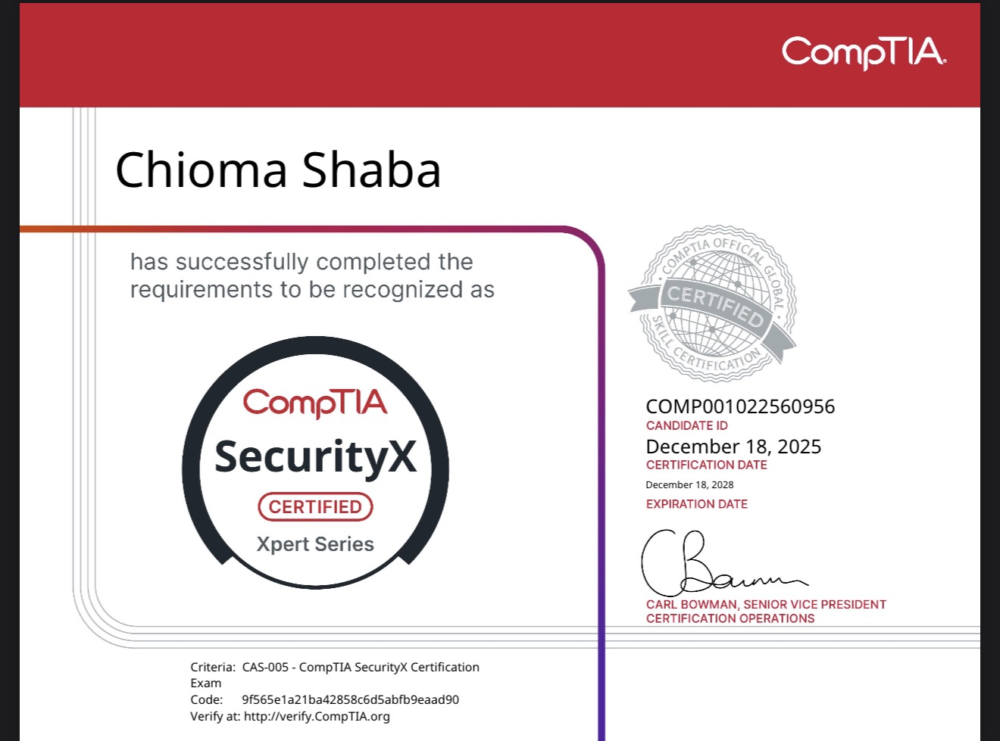
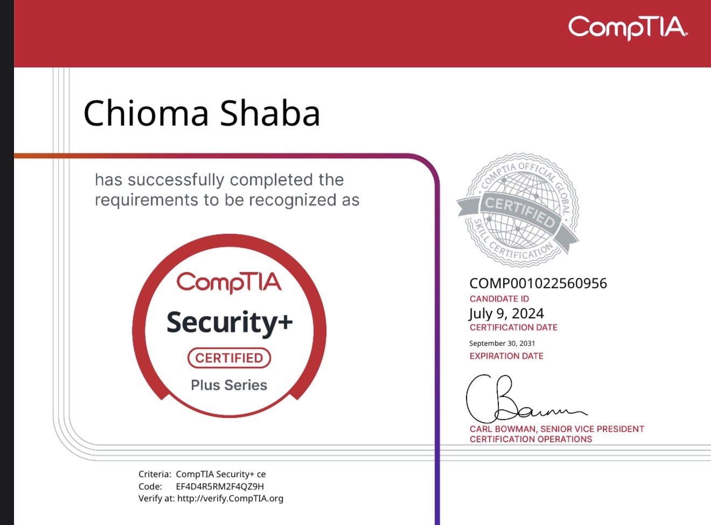
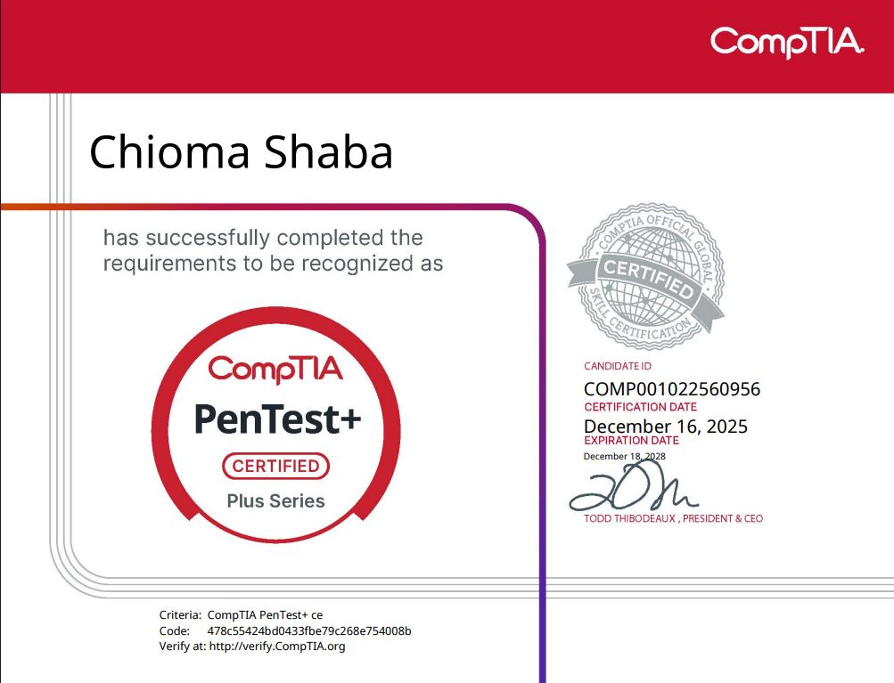
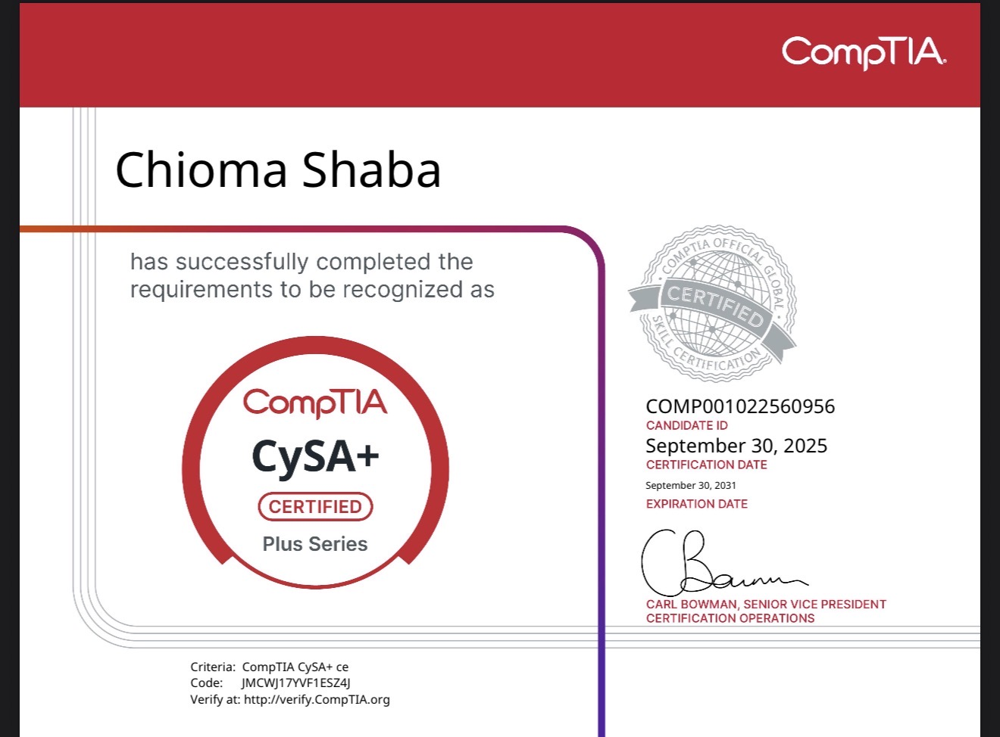
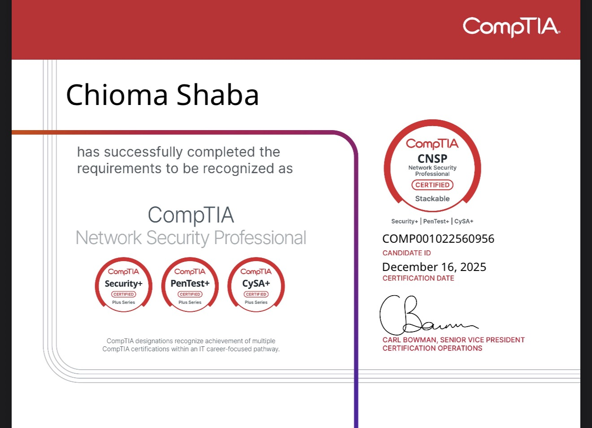
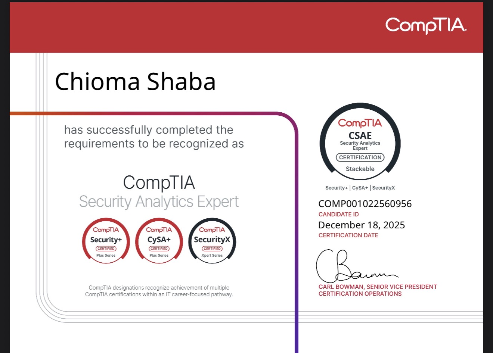
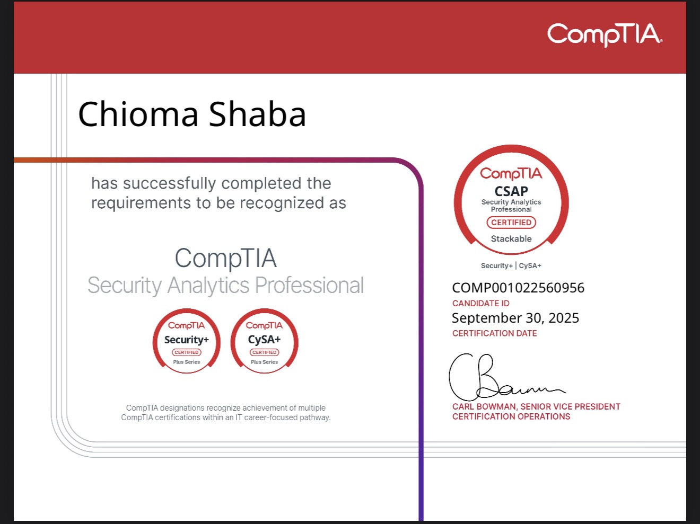
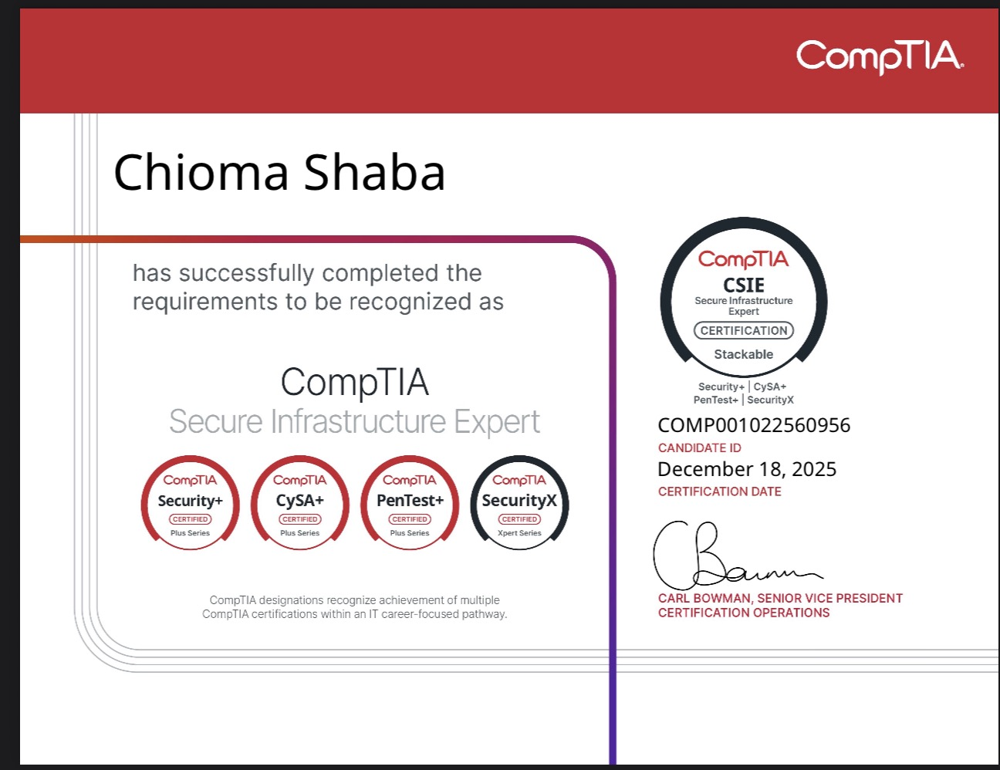

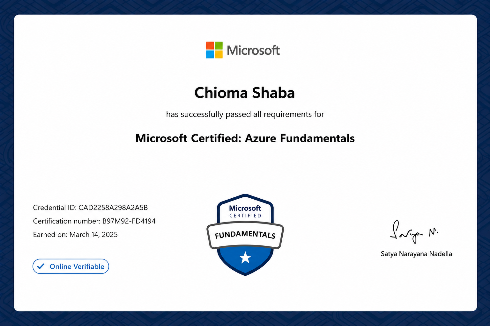
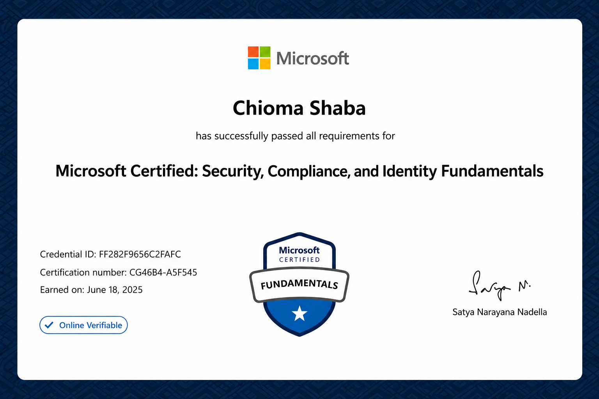

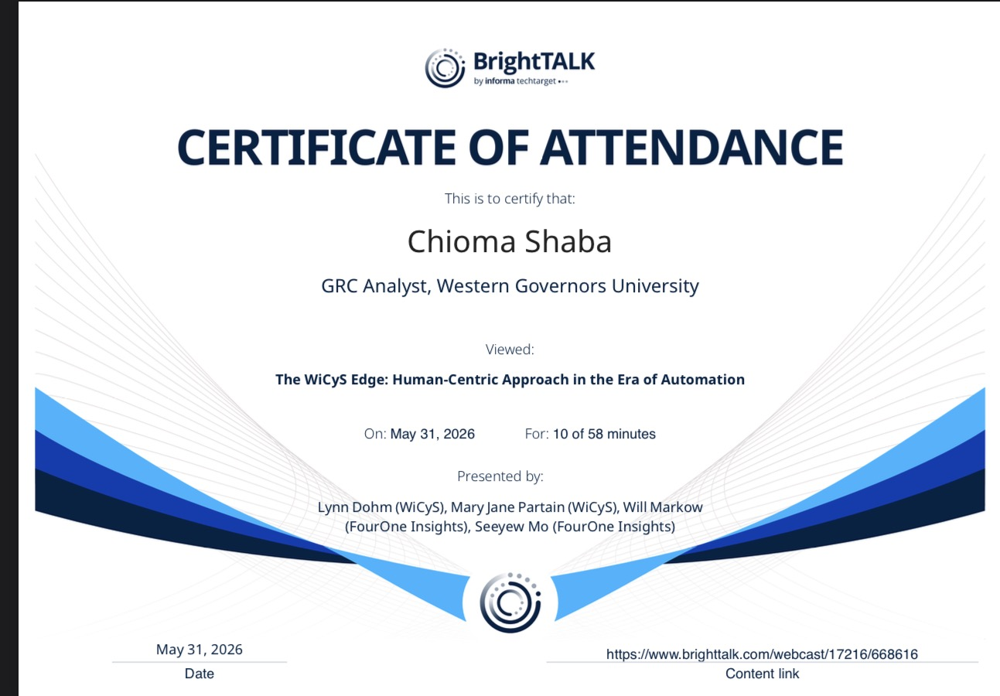
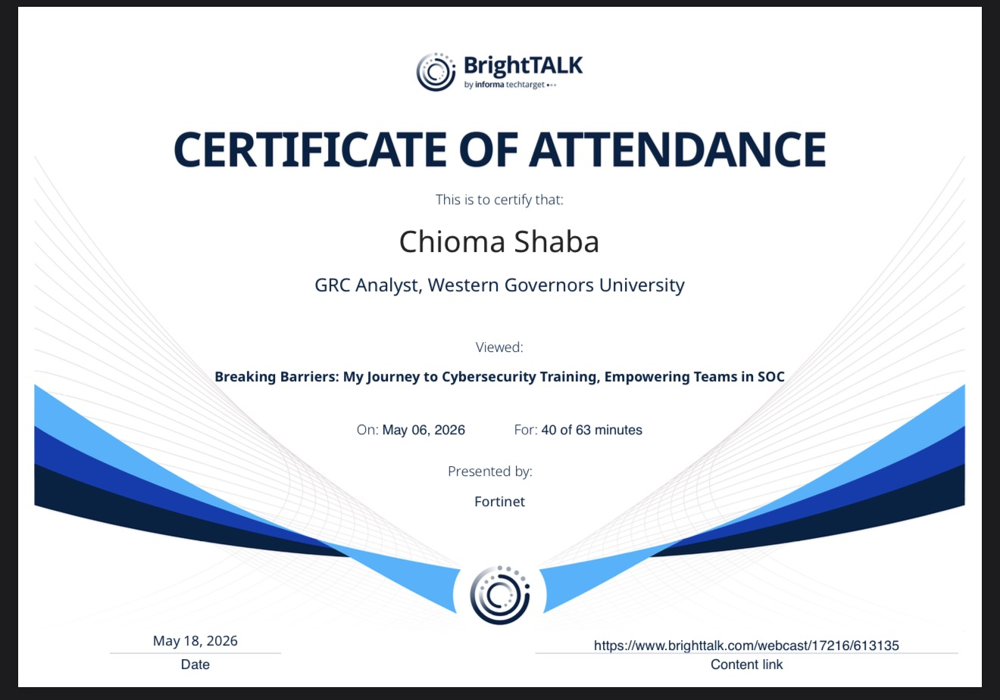
Contact
Email: chiomashaba1@gmail.com
LinkedIn: linkedin.com/in/chioma-shaba
GitHub: github.com/chioma-shaba